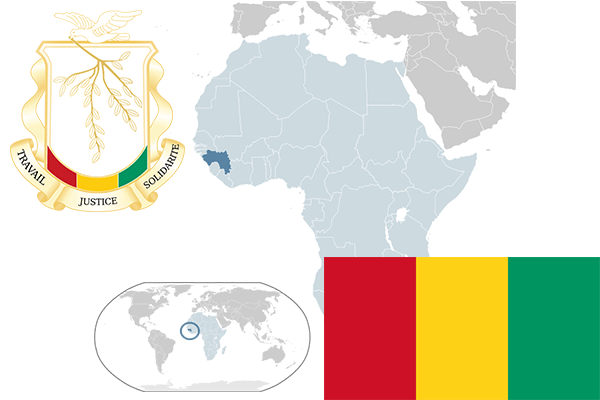

To`liq nomi: Gvineya Respublikasi
Region: G`arbiy Afrika
Qonunchilik shakli: Respublika
Mustaqillik kuni: 2-oktabr 1958-yil (Fransiyadan)
Poytaxt: Konakri
Maydoni: 245 857 km² (dunyoda 77 -o`rinda )
Chegaradosh davlatlari: Gvineya-Bisau, Senegal, Mali, Liberiya, Serra-Lione
Aholisi: 11 176 026 (dunyoda 75 - o`rinda, 2013 -yil roʻyxat)
Aholi zichligi: 39,4/km²
Aholining o`rtacha yoshi: 49,65 yil (50,8 ayollar, 48,5 erkaklar)
Rasmiy tili: fransuz tili
Dini: 75% musulmonlar, 1,5% xristianlar, qolgan qismi mahalliy dinlarga e`tiqod qiladi
Pul birligi: Gvineya franki
Telefon prefiksi: +224
Internet domen: .gn
Xalqaro tashkilotlarga a`zoligi: BMT (1958 – yildan)
Dengiz va okeanlarga chiqishi: Atlantika okeani
YIM: Butun: $ 10 422 mln Jon boshiga $ 1014 (2008 - yil roʻyxati)
Yirik shaharlari: Konakri, Naerekore, Kindia